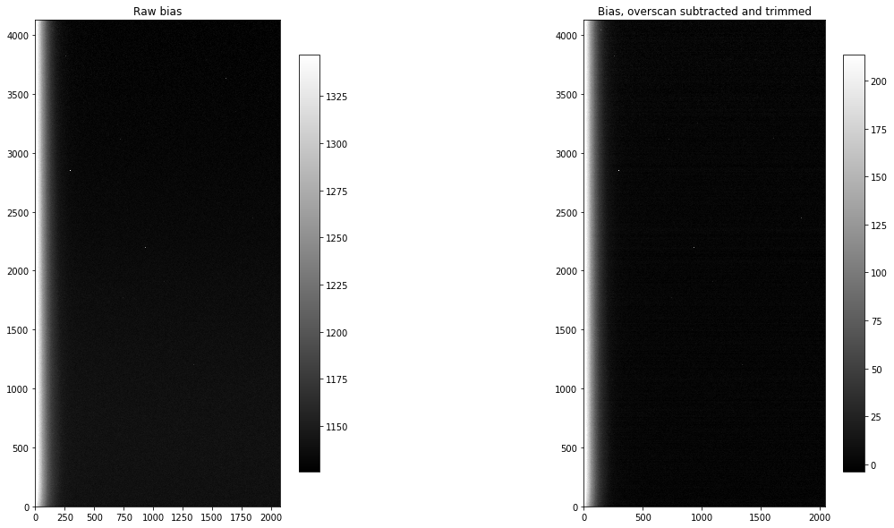

Calibrating bias images
The purpose of calibrating bias images is three-fold:
- Subtract overscan if you have decided your science will be better if you subtract overscan. See this discussion of overscan for some guidance.
- Trim the overscan region off of the image if it is present, regardless of whether you have chosen to subtract the overscan.
- Combine the bias images into a “combined” bias to be used in calibrating the rest of the images. The purpose of combining several images is to reduce as much as possible the read noise in the combined bias.
The approach in this notebook will be to reduce a single image, look at the effects the reduction step had on that image and then demonstrate how to calibrate a folder containing several images of that type.
from pathlib import Path
import os
from astropy.nddata import CCDData
from astropy.visualization import hist
import ccdproc as ccdp
import matplotlib.pyplot as plt
import numpy as np
from convenience_functions import show_image
Example 1: With overscan subtraction
### Decide where to put your calibrated images
Though it is possible to overwrite your raw data with calibrated images that is a bad idea. Here we create a folder called example1-reduced that will contain the calibrated data and create it if it doesn’t exist.
calibrated_data = Path('.', 'example1-reduced')
calibrated_data.mkdir(exist_ok=True)
Data for this example
The data for this example can be downloaded from http://www.stsci.edu/~etollerud/python_imred_data.tar
In what follows, the unpacked data is presumed to be available in the same direction as this notebook.
Make an image file collection for the raw data
files = ccdp.ImageFileCollection('python_imred_data')
files.summary['file', 'imagetyp', 'filter', 'exptime', 'naxis1', 'naxis2']
| file | imagetyp | filter | exptime | naxis1 | naxis2 |
|---|---|---|---|---|---|
| str17 | str9 | str2 | float64 | int64 | int64 |
| ccd.001.0.fits.gz | BIAS | i' | 0.0 | 2080 | 4128 |
| ccd.002.0.fits.gz | BIAS | i' | 0.0 | 2080 | 4128 |
| ccd.003.0.fits.gz | BIAS | i' | 0.0 | 2080 | 4128 |
| ccd.004.0.fits.gz | BIAS | i' | 0.0 | 2080 | 4128 |
| ccd.005.0.fits.gz | BIAS | i' | 0.0 | 2080 | 4128 |
| ccd.006.0.fits.gz | BIAS | i' | 0.0 | 2080 | 4128 |
| ccd.014.0.fits.gz | FLATFIELD | g' | 70.001 | 2080 | 4128 |
| ccd.015.0.fits.gz | FLATFIELD | g' | 70.011 | 2080 | 4128 |
| ccd.016.0.fits.gz | FLATFIELD | g' | 70.001 | 2080 | 4128 |
| ccd.017.0.fits.gz | FLATFIELD | i' | 7.0 | 2080 | 4128 |
| ccd.018.0.fits.gz | FLATFIELD | i' | 7.0 | 2080 | 4128 |
| ccd.019.0.fits.gz | FLATFIELD | i' | 7.0 | 2080 | 4128 |
| ccd.037.0.fits.gz | OBJECT | g' | 300.062 | 2080 | 4128 |
| ccd.043.0.fits.gz | OBJECT | i' | 300.014 | 2080 | 4128 |
darks_only = ccdp.ImageFileCollection('python_imred_data/darks/')
darks_only.summary['file', 'imagetyp', 'exptime']
| file | imagetyp | exptime |
|---|---|---|
| str17 | str4 | float64 |
| ccd.002.0.fits.gz | BIAS | 0.0 |
| ccd.013.0.fits.gz | DARK | 300.0 |
| ccd.014.0.fits.gz | DARK | 300.0 |
| ccd.015.0.fits.gz | DARK | 300.0 |
| ccd.017.0.fits.gz | DARK | 70.0 |
| ccd.018.0.fits.gz | DARK | 70.0 |
| ccd.019.0.fits.gz | DARK | 70.0 |
| ccd.023.0.fits.gz | DARK | 7.0 |
| ccd.024.0.fits.gz | DARK | 7.0 |
| ccd.025.0.fits.gz | DARK | 7.0 |
Determine overscan region
Please see the discussion of this camera in the overscan notebook for the appropriate overscan regioin to use for this camera. Note, in particular, that it differs from the the value given in the BIASSEC keyword in the header of the images.
The astropy affiliated package ccdproc provides two useful functions here:
subtract_overscanfor subtracting the overscan from the image, andtrim_imagefor trimming off the overscan.
First, let’s see what the values of BIASSEC which sometimes (but not always) indicates that there is is overscan and which part of the chip is the overscan, and CCDSEC, which is sometimes, but not always present, and indicates which part of the chip light hit.
Note that neither of these are standard; sometimes, for example, trimsec is used instead of ccdsec, and there are likely other variants. Some images may have neither keyword in the header. That does not necessary indicate that ovserscan isn’t present. The best advice is to carefully check the documentation for the camer you are using.
files.summary['file', 'imagetyp', 'biassec', 'ccdsec', 'datasec'][0]
| file | imagetyp | biassec | ccdsec | datasec |
|---|---|---|---|---|
| str17 | str9 | str18 | str15 | str15 |
| ccd.001.0.fits.gz | BIAS | [2049:2080,1:4127] | [1:2048,1:4128] | [1:2048,1:4128] |
The fits header claims the overscan extends from the 2049th column to the end of the image (this is one-based indexing) and that the part of the image exposed to light extends over all rows and from the first column to the 2048$^{th}$ column (again, this is one-indexed).
FITS vs Python indexing
There are two differences between FITS and Python in terms of indexing:
- Python indexes are zero-based (i.e. numbering starts at zero), FITS indexes are one-based (i.e. numbering starts at 1).
- The order of the indexes is swapped.
For example, the FITS representation of the part of the chip exposed to light is [1:2048,1:4128]. To access that part of the data from a numpy array in Python, switch the order so that the indexing looks like this: [0:4128, 0:2048] (or, more compactly [:, :2048]). Note that the ending indexes given here for python are correct because the second part of a range (after the colon) is not included in the array slice. For example, 0:2048 starts at 0 (the first pixel) and goes up to but not including 2048, so the last pixel included is 2047 (the 2048$^{th}$ pixel).
As discussed in the overscan notebook, the useful overscan region for this camera starts at the 2055$^{th}$ column, not column 2049 as indicated by the BIASSEC keyword in the header. This situation is not unusual; column 2049 is the first of the columns masked by the manufacturer from light but there is some leakage into this region from the rest of the CCD.
If you are going to overscan you need to carefully emaine the overscan in a few representative images to understand which part of the overscan to use.
In what follow, we will use for the overscan the region (Python/numpy indexing) [:, 2055:].
Subtract and then trim the overscan (one sample image)
Using subtract_overscan is reasonably straightforward, as shown in the cell below.
raw_biases = files.files_filtered(include_path=True, imagetyp='BIAS')
first_bias = CCDData.read(raw_biases[0], unit='adu')
bias_overscan_subtracted = ccdp.subtract_overscan(first_bias, overscan=first_bias[:, 2055:], median=True)
Next, we trim off the full overscan region (not just the part we used for subtracting overscan)
trimmed_bias = ccdp.trim_image(bias_overscan_subtracted[:, :2048])
fig, (ax1, ax2) = plt.subplots(1, 2, figsize=(20, 10))
show_image(first_bias.data, cmap='gray', ax=ax1, fig=fig)
ax1.set_title('Raw bias')
show_image(trimmed_bias.data, cmap='gray', ax=ax2, fig=fig)
ax2.set_title('Bias, overscan subtracted and trimmed')
Text(0.5, 1.0, 'Bias, overscan subtracted and trimmed')

Discussion
Visually, the images look nearly identical before and after calibration. The only prominent difference is a shift in the pixel values, as one would expect from subtracting the same value from each pixel in an image. It simply shifts the zero point.
There is ones other important difference between the images: the input image uses 32MB of memory while the calibrated, overscan-subtracted image uses roughly 128MB. The input image is stored as unsigned 16-bit integers; the calibrated image is stored as floating point numbers, which default in python to 64-bit floats. The memory size is also the size the files will have when written to disk (ignoring any compression). One can reduce the memory and disk footprint by changing the dtype of the image: trimmed_bias.dtype = 'float32'. It is best to do this just before writing the image out because arithmetic operations on the image may convert its dtype back to float64.
Processing a folder of bias images
Processing each of the bias images individually would be tedious, at best. Instead, we can use the ImageFileCollection we created above to loop over only the bias images, saving each in the folder calibrated_data. In this example the files are saved uncompressed because the Python library for compressing gzip files is extremely slow.
for ccd, file_name in files.ccds(imagetyp='BIAS', # Just get the bias frames
ccd_kwargs={'unit': 'adu'}, # CCDData requires a unit for the image if
# it is not in the header
return_fname=True # Provide the file name too.
):
save_name, _ = file_name.split('.gz')
# Subtract the overscan
ccd = ccdp.subtract_overscan(ccd, overscan=ccd[:, 2055:], median=True)
# Trim the overscan
ccd = ccdp.trim_image(ccd[:, :2048])
# Save the result
ccd.write(calibrated_data / save_name)
Let’s check that we really did get the images we expect by creating an ImageFileCollection for the reduced folder and displaying the size of each image. We are expecting the images to be 2048 × 4128, and that there will be the same number of reduced bias images as input bias images (six).
reduced_images = ccdp.ImageFileCollection(calibrated_data)
reduced_images.summary['file', 'imagetyp', 'naxis1', 'naxis2']
| file | imagetyp | naxis1 | naxis2 |
|---|---|---|---|
| str14 | str4 | int64 | int64 |
| ccd.001.0.fits | BIAS | 2048 | 4128 |
| ccd.002.0.fits | BIAS | 2048 | 4128 |
| ccd.003.0.fits | BIAS | 2048 | 4128 |
| ccd.004.0.fits | BIAS | 2048 | 4128 |
| ccd.005.0.fits | BIAS | 2048 | 4128 |
| ccd.006.0.fits | BIAS | 2048 | 4128 |
Example 2: No overscan subtraction, but trim the images
If you are not subtracting overscan then the only manipulation you may need to do is trimming the overscan from the images. If there is no overscan region in your images then even that is unnecessary.
### Decide where to put your calibrated images
Though it is possible to overwrite your raw data with calibrated images that is a bad idea. Here we create a folder called example2-reduced that will contain the calibrated data and create it if it doesn’t exist.
calibrated_data = Path('.', 'example2-reduced')
calibrated_data.mkdir(exist_ok=True)
Data for this example
The data for this example can be downloaded from XXXX
files = ccdp.ImageFileCollection('example-thermo-electric')
files.summary['file', 'imagetyp', 'filter', 'exptime', 'naxis1', 'naxis2']
| file | imagetyp | filter | exptime | naxis1 | naxis2 |
|---|---|---|---|---|---|
| str34 | str5 | object | float64 | int64 | int64 |
| AutoFlat-PANoRot-r-Bin1-001.fit.gz | FLAT | r | 1.0 | 4109 | 4096 |
| AutoFlat-PANoRot-r-Bin1-002.fit.gz | FLAT | r | 1.0 | 4109 | 4096 |
| AutoFlat-PANoRot-r-Bin1-003.fit.gz | FLAT | r | 1.0 | 4109 | 4096 |
| AutoFlat-PANoRot-r-Bin1-004.fit.gz | FLAT | r | 1.0 | 4109 | 4096 |
| AutoFlat-PANoRot-r-Bin1-005.fit.gz | FLAT | r | 1.0 | 4109 | 4096 |
| AutoFlat-PANoRot-r-Bin1-006.fit.gz | FLAT | r | 1.02 | 4109 | 4096 |
| AutoFlat-PANoRot-r-Bin1-007.fit.gz | FLAT | r | 1.06 | 4109 | 4096 |
| AutoFlat-PANoRot-r-Bin1-008.fit.gz | FLAT | r | 1.11 | 4109 | 4096 |
| AutoFlat-PANoRot-r-Bin1-009.fit.gz | FLAT | r | 1.16 | 4109 | 4096 |
| AutoFlat-PANoRot-r-Bin1-010.fit.gz | FLAT | r | 1.21 | 4109 | 4096 |
| ... | ... | ... | ... | ... | ... |
| Dark-S001-R001-C003-NoFilt.fit.gz | DARK | -- | 90.0 | 4109 | 4096 |
| Dark-S001-R001-C004-NoFilt.fit.gz | DARK | -- | 90.0 | 4109 | 4096 |
| Dark-S001-R001-C005-NoFilt.fit.gz | DARK | -- | 90.0 | 4109 | 4096 |
| Dark-S001-R001-C006-NoFilt.fit.gz | DARK | -- | 90.0 | 4109 | 4096 |
| Dark-S001-R001-C007-NoFilt.fit.gz | DARK | -- | 90.0 | 4109 | 4096 |
| Dark-S001-R001-C008-NoFilt.fit.gz | DARK | -- | 90.0 | 4109 | 4096 |
| Dark-S001-R001-C009-NoFilt.fit.gz | DARK | -- | 90.0 | 4109 | 4096 |
| Dark-S001-R001-C020-NoFilt.fit.gz | DARK | -- | 90.0 | 4109 | 4096 |
| kelt-16-b-S001-R001-C084-r.fit.gz | LIGHT | r | 90.0 | 4109 | 4096 |
| kelt-16-b-S001-R001-C125-r.fit.gz | LIGHT | r | 90.0 | 4109 | 4096 |
Determine overscan region
Please see the discussion of this camera in the overscan notebook for a discussion of the overscan region of this camera. The overscan for this camera is not useful but should be trimmed out at this stage.
These headers have some information in the keywords BIASSEC and TRIMSEC indicating, in the FITS numbering convention, the overscan region and the science region of the chip.
files.summary['file', 'imagetyp', 'biassec', 'trimsec'][0]
| file | imagetyp | biassec | trimsec |
|---|---|---|---|
| str34 | str5 | str11 | str11 |
| AutoFlat-PANoRot-r-Bin1-001.fit.gz | FLAT | [4096:4109] | [1:4096, :] |
Based on this, and the decision not to subtract overscan for this camera, we will only need to trim the overscan region off of the images. See the discussion at FITS vs Python indexing, above, for some details about the difference between FITS and Python indexing. Essentially, to get Python indexes from FITS, reverse the order and subtract one.
Trim the overscan (one sample image)
The function trim_image from ccdproc removes a portion of the image and updates the image metadata as needed.
Below we get the first bias image.
raw_biases = files.files_filtered(include_path=True, imagetyp='BIAS')
first_bias = CCDData.read(raw_biases[0], unit='adu')
INFO: using the unit adu passed to the FITS reader instead of the unit adu in the FITS file. [astropy.nddata.ccddata]
There two ways of specifying the region to trim. One is to slice the image in Python; the other is to use the fits_section argument to trim_image.
The cell below uses a FITS-style section.
trimmed_bias_fits = ccdp.trim_image(first_bias, fits_section='[1:4096, :]')
The cell below does the same trimming as the one above, but with Python-style slicing.
trimmed_bias_python = ccdp.trim_image(first_bias[:, :4096])
np.testing.assert_allclose(trimmed_bias_python, trimmed_bias_fits)
Processing a folder of bias images
As in Example 1, above, we can use the ImageFileCollection we created to loop over only the bias images, saving each in the folder calibrated_data.
for ccd, file_name in files.ccds(imagetyp='BIAS', # Just get the bias frames
return_fname=True # Provide the file name too.
):
save_name, _ = file_name.split('.gz')
# Trim the overscan
ccd = ccdp.trim_image(ccd[:, :4096])
# Save the result
ccd.write(calibrated_data / save_name)
Example 3: No overscan at all
If there is no overscan then there is, in principle, nothing to be done with the bias frames. It may be convient to copy them to the directory with the rest of your reduced images. The code below does that.
calibrated_data = Path('.', 'example3-reduced')
calibrated_data.mkdir(exist_ok=True)
biases = files.files_filtered(imagetyp='BIAS', include_path=True)
import shutil
for bias in biases:
shutil.copy(bias, calibrated_data)